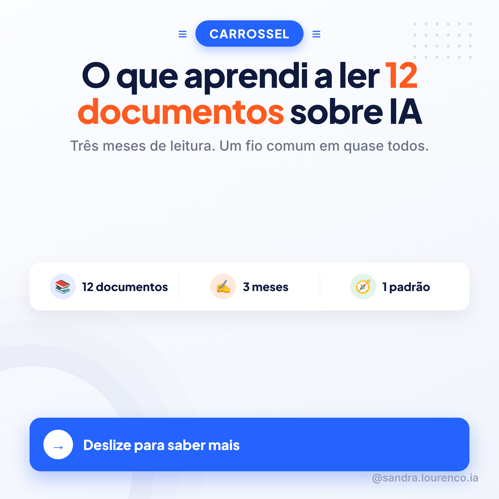
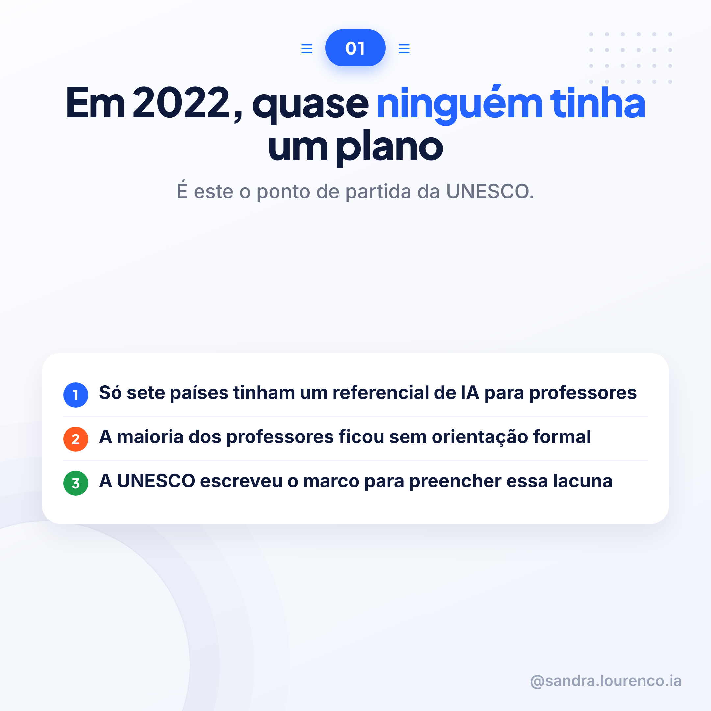
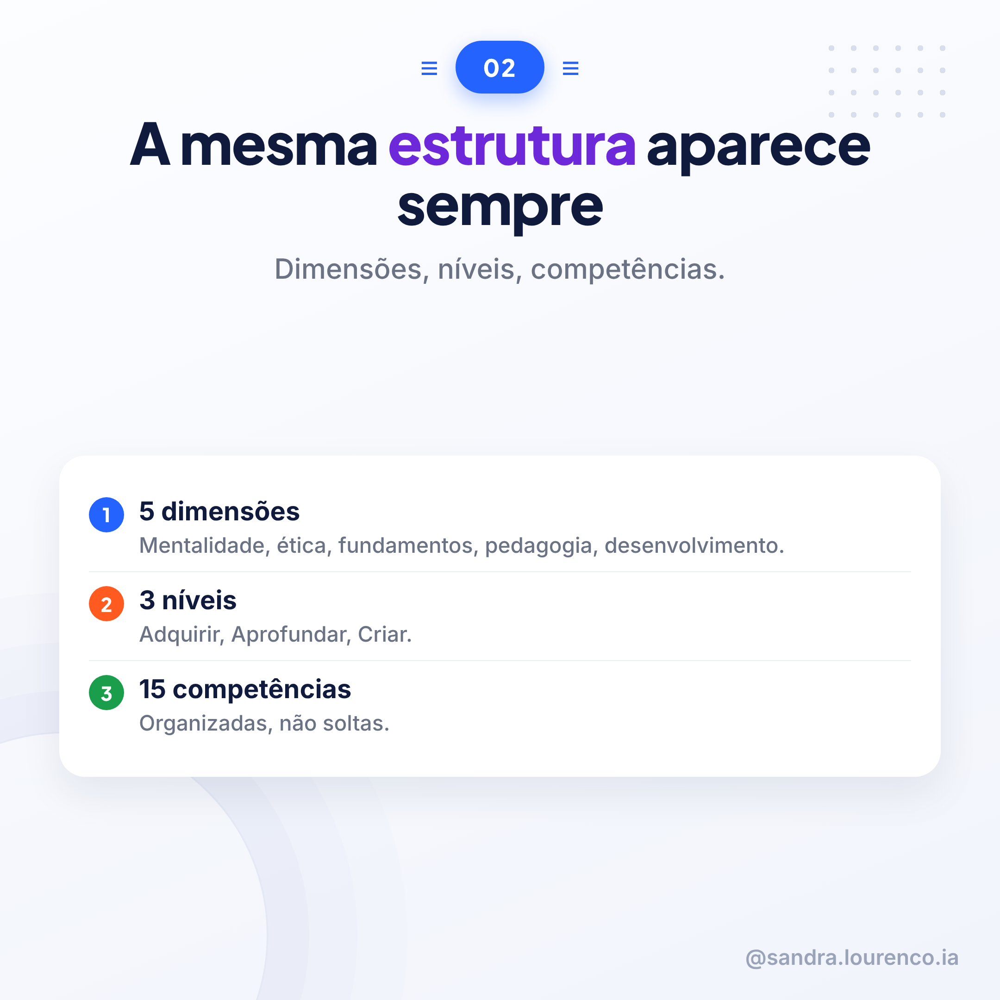
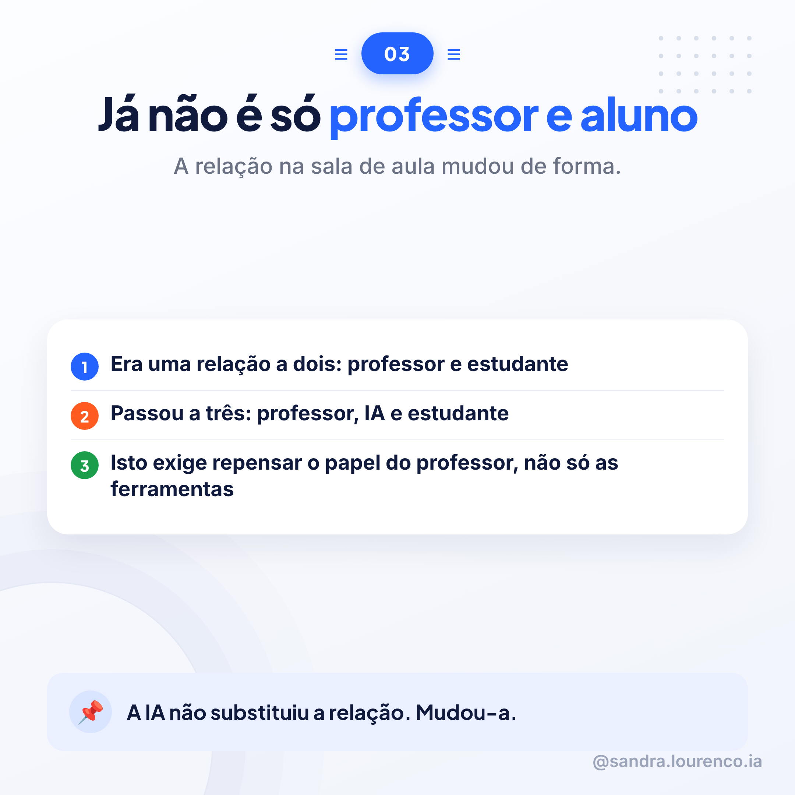
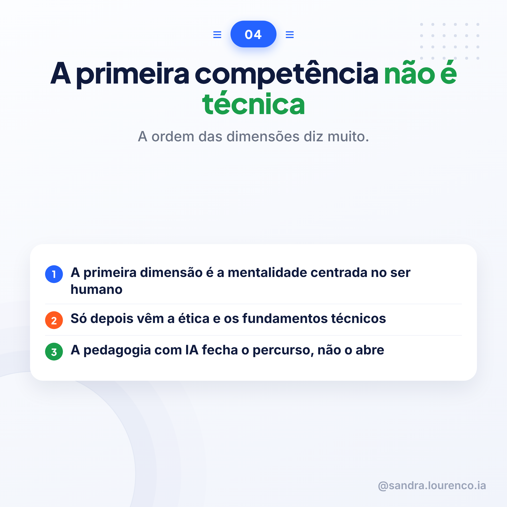
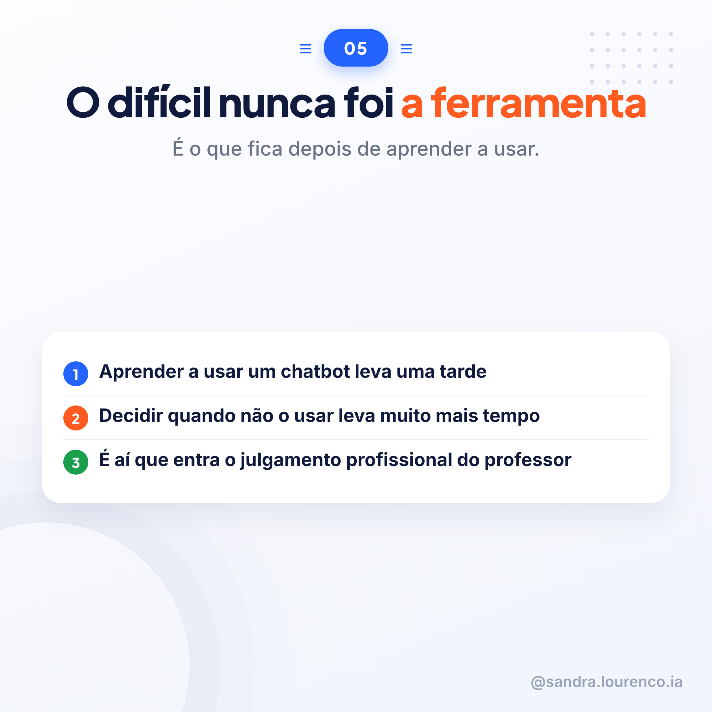
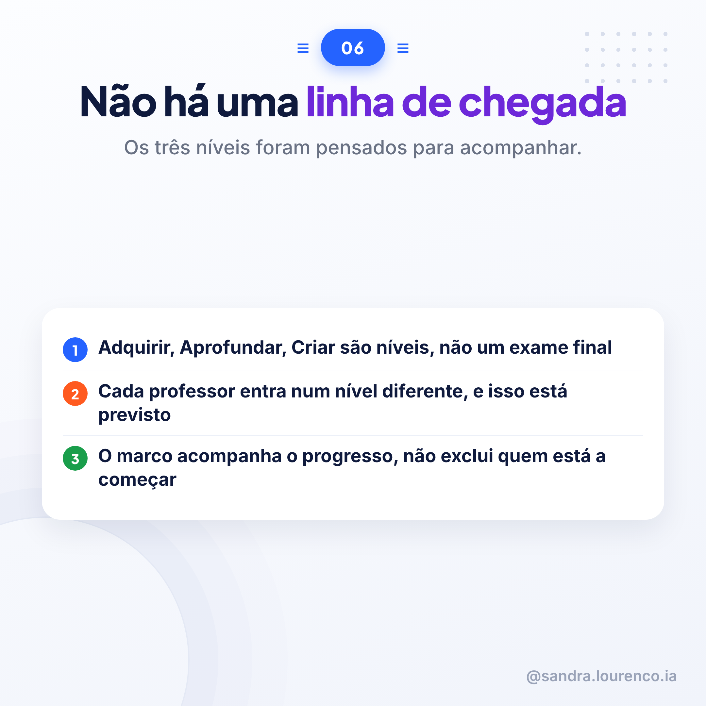
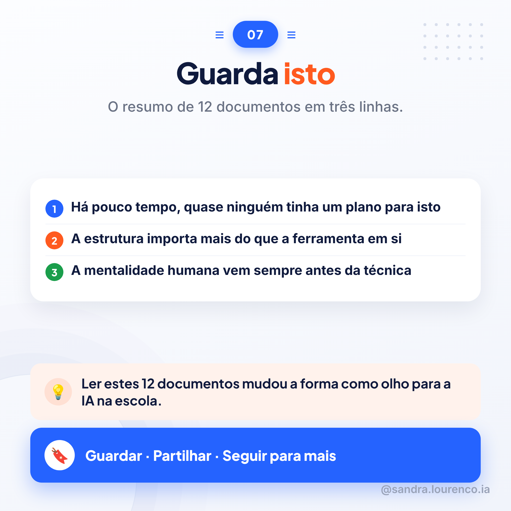

8 slides prontos, legendas para LinkedIn e TikTok/Instagram, e o guião de vídeo para o HeyGen. Tudo com botão de copiar — pronto a publicar.








Passei os últimos três meses a ler doze documentos sobre inteligência artificial na educação. Relatórios da UNESCO, da OCDE, do JRC, guias, orientações éticas. Ficou um fio comum. Em 2022, quase ninguém tinha um plano para isto. Só sete países tinham desenvolvido um referencial de competências em IA para professores. A maioria ficou sem orientação formal, à espera que alguém escrevesse as regras. Reparei também que a estrutura se repete: cinco dimensões, três níveis de progressão, quinze competências. Não é um conjunto de regras soltas, é um percurso. E a relação na sala de aula mudou de forma. Já não é só professor e aluno. Passou a ser professor, inteligência artificial e aluno. Isso pede um papel diferente de quem ensina, não só ferramentas novas. A primeira competência de todas não é técnica. É a mentalidade centrada no ser humano. Só depois vêm a ética, os fundamentos e a pedagogia. E talvez a ideia mais simples de todas: aprender a usar uma ferramenta leva uma tarde. Decidir quando não a usar leva muito mais tempo. É aí que está o verdadeiro trabalho do professor. #InteligenciaArtificial #Educacao #FuncaoPublica
Li 12 documentos sobre inteligência artificial na educação. Relatórios da UNESCO, da OCDE, do JRC. Em 2022, só sete países tinham um plano para isto. Hoje há uma estrutura clara: 5 dimensões, 3 níveis, 15 competências. Desliza para veres o que mudou mesmo na forma como vejo isto. #InteligenciaArtificial #Educacao #UNESCO
Cena 1 — Gancho Passei os últimos três meses a ler doze documentos sobre inteligência artificial na educação. E ficou um fio comum em quase todos. Cena 2 — Conteúdo Em 2022, quase ninguém tinha um plano para isto. Só sete países tinham um referencial de competências em inteligência artificial para professores. Cena 3 — Conteúdo A estrutura repete-se nos documentos: cinco dimensões, três níveis de progressão, quinze competências. Não são regras soltas, é um percurso. Cena 4 — Conteúdo E a relação na sala de aula mudou de forma. Já não é só professor e aluno. Passou a ser professor, inteligência artificial e aluno. Cena 5 — Conteúdo A primeira competência de todas não é técnica. É a mentalidade centrada no ser humano. A técnica vem depois. Cena 6 — Fecho e chamada à ação Aprender a usar uma ferramenta leva uma tarde. Decidir quando não a usar leva muito mais tempo. Se queres saber mais sobre inteligência artificial na educação, subscreve e segue para mais conteúdos como este. Nota para o HeyGen: usar as PNGs do carrossel (slides 1 a 8) como fundo de cada cena, pela ordem, com o avatar a narrar por cima.